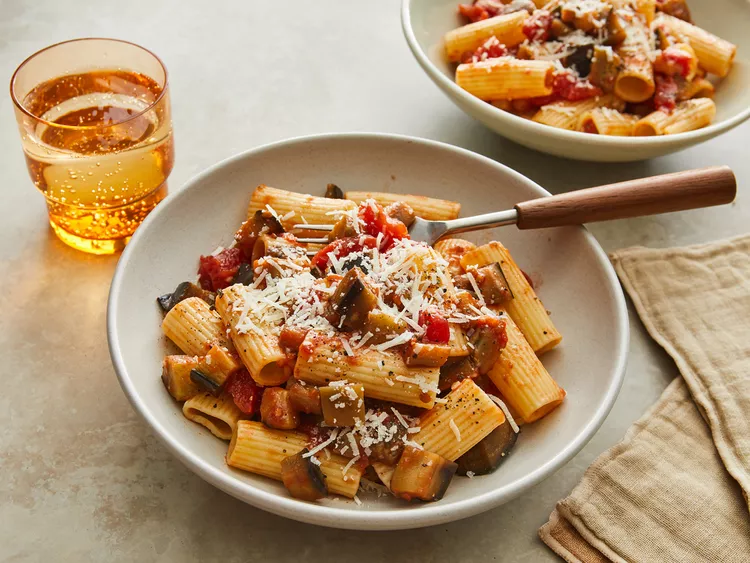

Pasta alla norma

Ingredients
- 1 Eggplant
- 150g Penne
- 4 cloves garlic
- 400g chopped tomatoes
- Fresh basil
- Red pepper flakes
- Parmesan
Stages
- Dice the eggplant into bite-size cubes, then season with salt and pepper then fry in 1tbsp olive oil for 8-10 minutes until golden
- In a seperate pan, fry garlic cloves and chili flakes in oil for 1 min until fragrant, then add chopped tomatoes, fresh basil and a pinch of salt. Cook for 5-8 minutes until reduced
- Once the pasta is cooked, reserve 1/4 cup of pasta water. Add pasta to the sauce, stir, and add water if too thick. Stir and cook for 1-2 minutes
- To serve, season to taste then top with eggplant and parmesan